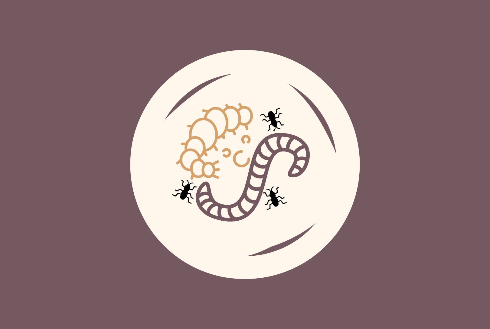

Factors That Affect Mealworms
Mealworms are, after all, living creatures, and their importance has risen as technological and environmental impacts have increased. As it has been discovered that they consume polystyrene foam, understanding the factors that affect them would be highly beneficial.
TEMPERATURE
The ideal growth temperature for larvae, pupae, and adults is 25-27.5 degree celsius , which results
in an 80.0-83.7-day development period (Zhao et al., 2016).
How to take care of mealworms?
LIGHT
Due to their nocturnal behaviors, mealworms are considered as ectothermic
animals that are most active at night. Since mealworms behave in this manner, it is
expected that in the absence of light, their metabolic rate would be higher than in the
presence of light.
HUMIDITY
If these larvae are held at a relative humidity of 80% or below at 23 degree celsius, they will lose weight over
time. If held at 90 percent humidity, they can gain weight.

CANNIBALISM
Cannibalism has been shown to have an impact on population dynamics as
well as competitive relationships among species. It is more prevalent in stressful
situations, including when population density is high or food is low, and cannibals
thus gain a nutritional advantage for this reason (Via, 1999).

ENVIRONMENT ADAPTABILITY